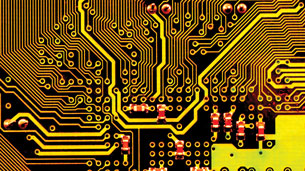

Module 6—Stoichiometry
Lesson 4—Solution Stoichiometry
 Get Focused
Get Focused
Image courtesy of NASA
The ability to launch humans into space and then support them while they are there involves the coordination of many systems. It might surprise you that circuit boards like the one pictured below are involved in all systems of a spacecraft. Whether the system is designed to control the flow of fuel into a rocket engine or to control the composition of gases within the crew compartment of the spacecraft, electronic circuits are involved.

©vadim kozlovsky/shutterstock/11241025
The manufacture of a circuit board actually involves removing the copper metal from a plate. Proper treatment and handling of the industrial waste from this process attempts to reclaim the copper. The process involves knowledge of the stoichiometry of aqueous solutions.
In the previous lessons you learned to use stoichiometry to predict quantitative changes of solid and gaseous substances. As you were shown in Modules 4 and 5, many chemical processes occur in aqueous solutions. Knowledge of stoichiometry involving solutions is essential in understanding many industrial and environmental issues.
In this lesson you will use stoichiometry to predict the quantities of substances in chemical reactions that involve solutions.
Essential Questions
-
How is the stoichiometric method applied to reactions that involve solutions?
 Module 6: Lesson 4 Assignment
Module 6: Lesson 4 Assignment
You will complete the Module 6 Assignment 4 in this lesson.
Remember that the questions that are not marked by the teacher provide you with the practice and feedback that you need to successfully complete this course. You should respond to all the questions and place those answers in your course folder.